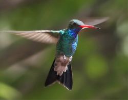

Самые маленькие птицы в мире

Самая маленькая птичка в мире. Ее длина не превышает шести сантиметров. Еще больше удивляет ее вес – до двух граммов. Это примерно вес половины чайной ложки воды. Живет колибри-пчелка исключительно на Кубе, отдавая предпочтение лесистым, богатым лианами районам. Рацион состоит только из нектара цветов. Гнезда строят такого же крохотного размера, как и они сами – около двух сантиметров в диаметре. В качестве строительного материала используются кусочки коры, лишайника и паутина. В каждой кладке обычно имеется два яйца, размер которых под стать птице – примерно как горошина...
Невероятные факты о дельфинах и их способностях
Дельфины являются удивительнейшими существами. Их разум могуч и загадочен. Даже собаки не могут сравниться с ними по уровню развития интеллекта. Представляем вашему вниманию 33 факта о дельфинах.
1)Дельфины очень многообразны. Всего в мире их насчитывается около сорока видов.
2)Самым близким родственником дельфина является, как это ни странно, бегемот. Примерно 40 миллионов лет назад эволюционное развитие дельфинов и бегемотов разошлось, но некотрое родство сохраняется. Даже относящиеся к семейству дельфиновых косатки ближе к бегемотам, чем к китам. Интересно и то, что дельфины ближе к человеку, чем к любому другому обитателю морей.
3)...